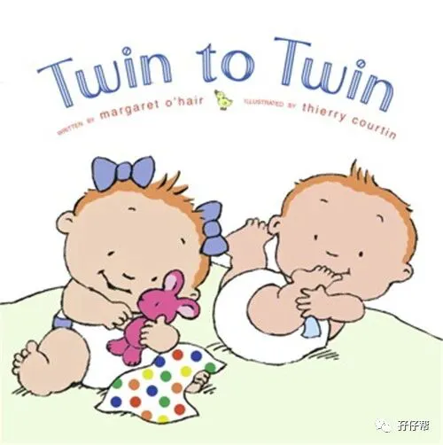

文|圆圈妈，一个文思如尿崩的双胎妈妈
图|来自网络，如有侵权，请联系删除
· 正 · 文 · 来 · 啦 ·
【01】两胎儿的发育情况
孕34周的胎宝宝有韭菜那么长了，从头部到臀部长约46.4CM，约2256G▼:
孕34周的双胞胎胎儿发育图▼：
【02】我的住院保胎经历
Ⅰ 孕周34W，住院第7天
今天开始进入34周，早晨醒来穿鞋子去厕所，发现鞋子好紧，还以为是穿错了别人的鞋子，仔细看才发现，鞋子是我的，脚不是我的。
我的那双猪蹄子居然一夜间秒变大象腿了。
我坐在床边，缓了好久....不得不接受这个事实，就把这双大象腿认了吧！
查房的时候，我自豪地亮出我的双脚，对医生说：“我的脚更肿了！”
医生打趣道：“你这脚挺有分量哈！”接着又叮嘱边上的护士“注意下35床的血压，查下尿常规！”
正所谓心宽体胖，我对住院再也不抵触了，心态放宽后，渐渐习惯了这边的作息。
我恢复了食欲，大口吃，放心睡，每天疯狂喝鲜牛奶+酸牛奶，壮着血糖正常，吃各种水果。
同病房的孕妈，个个住院都会瘦一圈，唯独我的体重一路飙升！
她们都不约而同地向我投来赞赏的目光：“女人，你真猛！”
Ⅱ 孕周34W+1D，住院第8天
一大早听到一个很不好的消息，33床的双胎妈妈剖腹产后突发状况进了抢救室！
整个上午，我都在发呆中度过，心里闷闷的，很不舒服。
我替她难过，也替自己担忧。
我和她都是双胎妈妈，我非常明白这一路走过来的苦，好不容易卸货了，居然进了抢救室，生死未卜..
我想我是被刺激到了！
看到那位双胎妈妈曾经睡过的33床，再想想此刻的她正在抢救室，这...太让人难以接受了。
一瞬间悲从中来，躲在被子里大哭起来。
想到自己不久之后即将要剖腹产，我冷不丁打了个寒颤。
也许我也会发生某些意想不到的突发状况，是死是活，也不知道。
这可怕的心理暗示，让我越想越怕，额头直冒冷汗…
仿佛我往后的命运也该如此，甚至更惨，连手术台都下不来，抢救机会都没有。
悲观的情绪影响了我的认知，我又开始胡思乱想了，总感觉左边的崽胎动得特别异常，一直叫护士给我量胎心。
直到晚上，圆圈爸下班来到医院，我跟他说起我的感受，得到圆圈爸的开导，才终于好受点！
Ⅲ 孕周34W+2D，住院第9天
同病房的准妈妈都在抱怨晚上睡不好。
可不，护士一个晚上隔两三个小时就听一次胎心，测下血压，有些血糖高的准妈妈，天刚蒙蒙亮就要被叫起来扎手指。
好在，我丝毫不受影响，我为自己的超级睡功暗自竖起大拇指。
我只要作息规律了，甭管怎么打扰，我都能六亲不认地睡大觉。
好希望将来我的两崽都能随了我，妥妥的睡神。
当然，我也有很苦恼的事情，比如做胎心监护。
双胞胎妈妈的胎心监护是个“鬼见愁”。
护士只要看到我的胎监申请单，就一脸生无可恋的样子，然后耷拉着脑袋去准备。
其实，我也是受害者，好嘛！
遇上实习助产士，态度还是挺好的，就是技术不咋滴，像我这样双胎，不好把握胎心，老是被她们摆来摆去的，看到她们很捉急的样子，我也不想为难她们。
遇到老油条的助产士，动不动就很凶！哎！我只是来做胎监的，不是来拉仇恨的。
每次胎监都要至少一个半小时，要是仪器出现问题，或者是两个崽的状态不好，或者是其他原因，两个小时也是必须的。
还好我是双胎，每次去都能安排床位给我躺着完成。
据说有些单胎孕妇，要是遇到人多排队的时候，都是坐在椅子上做一个多小时的胎监。
我也是醉了！
我这样的孕肚要是坐着做胎监，干脆直接把我拖去腰斩吧！
最让我无法接受的是，看着一群待产妇在我边上鬼哭狼嚎，我必须做到面不改色，无动于衷。
这次的隔壁床是一位待产的年轻准妈妈，她已经开了一指了，正在酝酿着开两指，三指...可是折腾了一个上午还是没有反应，喝了红牛也不管用，哗啦都吐出来了，边上又没有亲人，也没有护士照看着...
她躺在床上不停地呻吟着，嚎叫着...
我在一旁看着，心惊胆战，赶紧大喊一声：“护士…她吐了！”
住院一周，我很快习惯了这些“人间惨剧”，可是真正在我眼前直播，我依然无法淡定自若。
我想我至今对顺产有阴影，全是被这些产妇撕心裂肺的惨叫声给害的！
所幸，我已经做好切腹的准备！
Ⅳ 孕周34W+3D，住院第10天
听说33床的双胎妈妈情况好转，已转入普通病房！
我整个人轻松不少，替她开心的同时又对自己不日后的剖腹产信心满满。
我祈祷着，希望老天爷眷顾，保佑所有双胎妈妈都能顺利生产，逢凶化吉，化险为夷。
在小姑子的陪同下，我去给她报喜，看见她安静地睡着，手上还插着很多管子和针，旁边还放置着各种滴滴作响的监护仪，我一时语塞，想哭！
不知道的人还以为我是她的哪位亲人，只有我知道，我又在YY自己的处境会不会比她还要惨！
今天做胎监有幸见到了传说中的张海鹰，产科界的一把手。
据说他在高危妊娠，特别是双胎妊娠领域，有丰富的临床经验，是大咖级别的人物。
孕期产检一直很想约他的号，可是没有机会，好不容易约上了，却提前被收入院了。
今日一见，有种看到偶像时的欣喜若狂，无奈我此刻正躺在那里，被五花大绑着肚子做胎监。
他看到我那夸张的肚子问：“肚子那么大，双胎啊！试管的吧？”
我很不喜欢别人这样质疑我，即便对方是我的偶像，虽然医生见多了试管双胎，但也不能一刀切吧！
我又不是不能生，干嘛试管找罪受，嫌钱多啊。
Ⅴ 孕周34W+4D，住院第11天
医生给我约了B超，这是住院保胎期间做的第一次B超，没想到这是我整个孕期最后一次B超。
住院部的B超要去门诊部做。
留医部超声科室外等待的病患家属与东门逛街购物的人相比，有过之而无不及。
我坐在轮椅上，凭着一个巨肚，轻松把所有人的目光都锁在我身上，偶尔还有人过来问：“你这肚子是双胎吗？好大啊！”
我带上口罩，不想搭理了，因为我好疼，后背，腰部，腿部和耻骨...好疼！
只是坐了30分钟而已，我就抓狂到很想来个“泰山吼叫”！
B超室的医生看到需要人搀扶着进来的我，躺下时还颤颤巍巍的动作，不解地问：“你这…还不舍得生啊！”
“呵呵...双胎…才34周！”我苦笑着回答，对于这类问题，已经驾轻就熟了！
这次B超显示：宫颈管更短了！只有16CM。
撑到36周，很悬！
我用胎儿体重计算器算了下两崽的体重，才4.1斤，去掉误差，可能4斤都没有（B超一般都偏重）
这体重出来，怕是百分百入保温箱了！
Ⅵ 孕周34W+5D，住院第12天
我成了产前区的网红！
论哪个孕妇的肚子，非35床莫属！没人敢跟我抢第一。
好多闲来无事的孕妇家属都纷纷跑来病房外看我的肚子。
有次我扶着墙壁出去打开水，有一大妈前面没看够还要围着我转了一圈，足足看了3遍，真是又好气又好笑。
每次查房都会被医生调侃：“瞧你这小山丘…”
每次一出病房门，无论谁看见我，都给我让路，生怕不小心把我绊倒了，摔倒了怎么爬起来！
更奇葩的是，那些人明明在我后面，特意跑到我前面，盯着我肚子看，都已经走远了，还要回过头来看多几眼。
我只是肚子大而已！又不是怪胎！至于那么稀奇嘛！
为了不引起轰动，我缩减了活动范围，只敢在走廊里走动下，稍微透下气，就回到病床上躺着。
Ⅶ 孕周34W+6D，住院第13天
今天33床又来了一个双胎妈妈，双绒双羊，已经36周了，妊娠高血压被收入院！
我看着她36周的肚子，再看着自己34周的肚子，不解了！
为啥她的肚子看着挺小的，我的肚子却异常巨大！
为啥她可以走路健步如飞，而我却要扶墙才能走！
为啥她可以下楼去散步，而我只能躺床上度日如年！
….
同样都是双胎妈妈，怎么搁我这就变样了！
☞未完待续☜
上期预告：
连载（一）|圆圈妈双胞胎怀孕过程第4周
连载（二）|圆圈妈双胞胎怀孕过程第5周
连载（三）|圆圈妈双胞胎怀孕过程第6周
连载（四）|圆圈妈双胞胎怀孕过程第7周
连载（五）|圆圈妈双胞胎怀孕过程第8周
连载（六）|圆圈妈双胞胎怀孕过程第9周
连载（七）|圆圈妈双胞胎怀孕过程第10周
连载（八）|圆圈妈双胞胎怀孕过程第11周
连载（九）|圆圈妈双胞胎怀孕过程第12周
连载（十）|圆圈妈双胞胎怀孕过程第13周
连载（十一）|圆圈妈双胞胎怀孕过程第14周
连载（十二）|圆圈妈双胞胎怀孕过程第15周
连载（十三）|圆圈妈双胞胎怀孕过程第16周
连载（十四）|圆圈妈双胞胎怀孕过程第17周
连载（十五）|圆圈妈双胞胎怀孕过程第18周
连载（十六）|圆圈妈双胞胎怀孕过程第19周
连载（十七）|圆圈妈双胞胎怀孕过程第20周
连载（十八）|圆圈妈双胞胎怀孕过程第21周
连载（十九）|圆圈妈双胞胎怀孕过程第22周
连载（二十）|圆圈妈双胞胎怀孕过程第23周
连载（二十一）|圆圈妈双胞胎怀孕过程第24周
连载（二十二）|圆圈妈双胞胎怀孕过程第25周
连载（二十三）|圆圈妈双胞胎怀孕过程第26周
连载（二十四）|圆圈妈双胞胎怀孕过程第27周
连载（二十五）|圆圈妈双胞胎怀孕过程第28周
连载（二十六）|圆圈妈双胞胎怀孕过程第29周
连载（二十七）|圆圈妈双胞胎怀孕过程第30周
连载（二十八）|圆圈妈双胞胎怀孕过程第31周
连载（二十九）|圆圈妈双胞胎怀孕过程第32周
连载（三十）|圆圈妈双胞胎怀孕过程第33周
下期预告：
连载（三十二）|圆圈妈双胞胎怀孕过程第35周
-END-
重磅互动
#你希望写什么育儿经验干货？#
评论区聊一聊
随便提，万一下篇就写了呢？
关于这个号
谢谢关注！
我是圆圈妈
85后，全职妈妈
家有孖仔两枚，圆圈&圈圈
双胞胎育儿公众号：孖仔帮
ID:twinsbang
旨意分享双胞胎育儿经验帮助双胞胎家庭
有经验可循
有组织可靠
希望我的经验对您有所启发
期待与您一起共享双胞胎育儿经
